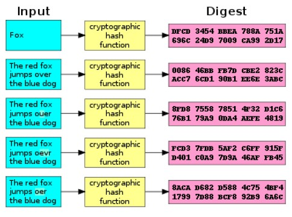

Apuntes
Índice
Introducción
La criptografía es el arte o ciencia de cifrar y descifrar información mediante técnicas específicas y se emplea frecuentemente para transformar mensajes de manera que sólo puedan ser leídos por personas o procesos a los que van dirigidos y que posean los medios necesarios para descifrarlos. La criptografía desempeña un papel crucial en la garantía de la confidencialidad, integridad y autenticidad de los datos durante su comunicación o almacenamiento.
Vocabulario básico

- Texto en claro o texto plano es la información original que debe protegerse..
- Texto cifrado o criptograma es la información expresada de manera ininteligible..
- Algoritmo de cifrado: conjunto de reglas matemáticas y procedimientos utilizados para transformar el texto plano en texto cifrado.
- Algoritmo de descifrado: conjunto de reglas matemáticas y procedimientos utilizados para transformar el texto cifrado en texto plano.
- Clave es un dato adicional que recibe el algoritmo de cifrado o descifrado para cada texto a procesa. Los algoritmos de cifrado y descifrado son ampliamente conocidos y su documentación está al alcance de todos. Así, la seguridad del sistema se basa principalmente en la confidencialidad de las claves empleadas.
Principios de la Seguridad Informática
Confidencialidad
La confidencialidad es un conjunto de reglas que impide que la información sensible sea divulgada a personas, recursos o procesos no autorizados.
Métodos para garantizar la confidencialidad incluyen:
- Cifrado de datos
- Verificación de identidad
- Autenticación multifactor
Integridad
La integridad garantiza que la información o los procesos del sistema estén protegidos contra modificaciones intencionadas o accidentales.
Un método para garantizar la integridad es el uso de:
- Funciones hash
- Sumas de verificación (checksums)
Autenticación
La autenticación es el proceso de verificar la identidad de un usuario, sistema o entidad que intenta acceder a un sistema informático o recurso digital.
Métodos de autenticación incluyen:
- Formularios de inicio de sesión
- Certificados digitales
- Autenticación multifactor
No repudio
El no repudio garantiza que nadie pueda negar el origen o la autenticidad de un mensaje.
Métodos de no repudio incluyen:
- Firmas digitales
Principales objetivos de la criptografía
Confidencialidad de datos
- Objetivo: ocultar el contenido de un mensaje ante observadores no autorizados.
- Herramienta principal: cifrado y descifrado.
Integridad de datos
- Objetivo: garantizar que el mensaje no ha sido alterado.
- Herramienta principal: funciones hash.
Autenticación
- Objetivo: verificar el origen de un mensaje (creador, tiempo de creación, etc.).
- Herramienta principal: firma digital.
No repudio
- Objetivo: evitar que el remitente niegue haber enviado un mensaje.
- Herramienta principal: firma digital.
Criptografía simétrica (clave privada)
La criptografía de clave simétrica, también conocida como criptografía de clave privada, es un método en el cual se utiliza la misma clave tanto para cifrar como para descifrar los mensajes. Las dos partes que se comunican deben acordar previamente qué clave utilizar y mantenerla en secreto

- Ejemplos de algoritmos: DES, 3DES, AES.
- Ventaja
✔️ Algoritmos eficientes. - Desventajas
❌ ¿Cómo se comparte la clave de manera segura?
❌ Se necesitan muchas claves para establecer comunicación segura entre múltiples usuarios.
Criptografía asimétrica
La criptografía de clave asimétrica, o criptografía de clave pública, proporciona un par de claves para cada participante: una clave privada, que se mantiene en secreto, y una clave pública, que está disponible para todos los participantes. Los mensajes cifrados con una de las claves solo pueden ser descifrados con la otra.
La confidencialidad se logra cifrando el mensaje con la clave pública del destinatario, ya que solo él podrá descifrarlo usando su clave privada correspondiente.
Por otro lado, el emisor puede cifrar el mensaje con su clave privada, de modo que cualquier receptor pueda verificar la autenticidad del mensaje utilizando la clave pública del emisor.
- Ejemplos de algoritmos: RSA, DSA, ECC.
- Ventaja
✔️ No es necesario compartir una clave privada. - Desventaja
❌ Los algoritmos requieren muchos recursos computacionales.
Criptografía híbrida
Se usa la criptografía asimétrica solo para compartir la clave de la criptografía simétrica, que se emplea durante la comunicación.
Huellas digitales y sumas de verificación
Las huellas digitales (fingerprints) y las sumas de control (checksums) son métodos empleados para verificar la integridad de los datos; ambas están basadas en funciones hash.
- Huellas digitales: verifican que los datos no han sido alterados o corrompidos durante la transmisión o el almacenamiento.
- Sumas de control (cheksums): empleadas para detectar errores en los datos más que para garantizar su integridad.
Una función resumen (hash) es una función matemática o un algortimo que aplicada a un conjunto de datos de tamaño ilimitado (por ejemplo, un fichero) obtiene un número (secuencia de bits) de longitud fija, que cumple las siguientes propiedades:
- Una función hash siempre obtandrá el mismo valor resumen para el mismo conjunto de datos.
 - No existe un algoritmo rápido para restaurar el conjunto de datos original a partir de su valor hash.

- Un cambio mínimo en el conjunto de datos da como resultado un valor hash significativamente diferente.

Las funciones resumen tiene varias aplicaciones, como por ejemplo:
- Comprobación de la integridad de ficheros
- Almacenamiento de contraseñas de usuarios en un fichero
MD5, SHA-512, SHA-3 … son ejemplos de algoritmos que, entre otras funciones, también se utilizan para generar funciones resumen.
Firma digital
La firma digital de un conjunto de datos se obtiene cifrando el hash del mismo con una clave privada (mediante criptografía asimétrica). Normalmente, esta firma se adjunta al conjunto de datos. Si no se necesita confidencialidad, el conjunto de datos puede transmitirse en texto claro.
Si los datos no han sido modificados, el resultado de descifrar la firma digital con la clave pública correspondiente a la clave privada utilizada debe coincidir con el valor hash de los datos. Esta comparación permite validar la firma.e.
Certificado digital
Un certificado digital es un archivo que verifica la identidad de su titular mediante credenciales criptográficas. Se usa para autenticación, cifrado y verificación de integridad de datos.
Un certificado digital es una credencial criptográfica en forma de archivo que verifica la identidad de su titular. Los certificados digitales tienen una amplia variedad de usos, principalmente relacionados con la autenticación, el cifrado y la integridad de los datos. Normalmente, se almacenan en el sistema de archivos del ordenador, en tarjetas inteligentes (como el eDNI) o en dispositivos de almacenamiento. Las aplicaciones utilizan certificados digitales para asegurar la comunicación web, autenticar usuarios o firmar documentos.
Las Autoridades de Certificación (CA, por sus siglas en inglés) emiten certificados digitales. Actúan como terceros de confianza, verificando y garantizando la identidad del titular del certificado
üìå Nota:
Un tercero de confianza es una entidad que interviene para facilitar la comunicación o el intercambio entre dos partes que no confían directamente entre sí, pero que ambas reconocen y confían en la legitimidad de ese tercero.
Elementos de un certificado digital
- Número de identificación.
- Información del titular (nombre, URL, etc.).
- Clave pública del titular.
- Fecha de expiración.
- Información de la CA (nombre, organización, etc.).
- Firma digital de la CA. Valida la autenticidad e integridad del certificado digital.
✋ Importante:
Cada certificado digital tiene asociada una clave privada que no está contenida en el propio certificado. Esta clave privada debe ser mantenida en secreto y de forma segura por el titular del certificado, y nunca debe compartirse ni divulgarse.
Un certificado autofirmado contiene la clave pública del emisor y está firmado con su propia clave privada.
✋ Importante:
Para verificar la firma digital de un certificado, se utiliza la clave pública de la Autoridad de Certificación (CA) emisora. Los sistemas operativos y navegadores incluyen varios certificados autofirmados de CA en las que confían.
Consejos de seguridad para certificados digitales
- Mantén tus claves privadas seguras.
- Usa contraseñas seguras si tu certificado está protegido por una contraseña.
- Guarda tu certificado en un lugar seguro, especialmente si está en una tarjeta inteligente o USB.
- Instala el certificado solo en tu propio equipo.